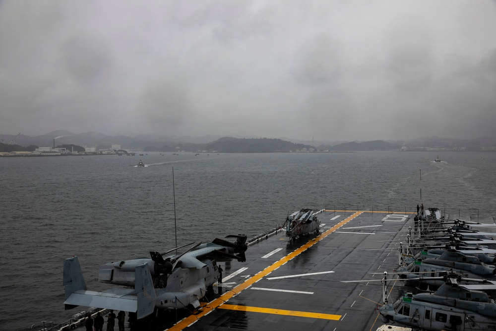

Mass Communication Specialist Seaman Kaitlyn Ratliff · DVIDS 10047721 · Public domain · USS Makin Island (LHD 8) pulls into Commander, Fleet Activities Yokosuka, Oct. 26, 2026.
DVIDS
USS Makin Island pulled into Yokosuka with the 13th Marine Expeditionary Unit
A Navy photograph dated Oct. 26 shows the Wasp-class amphibious assault ship USS Makin Island (LHD 8) pulling into Commander, Fleet Activities Yokosuka. The caption calls her the flagship of the Makin Island Amphibious Ready Group, underway with the 13th Marine Expeditionary Unit in the U.S. 7th Fleet area of operations. The photo page does not list a port-call length or a next sailing date.
DVIDS · Read source →